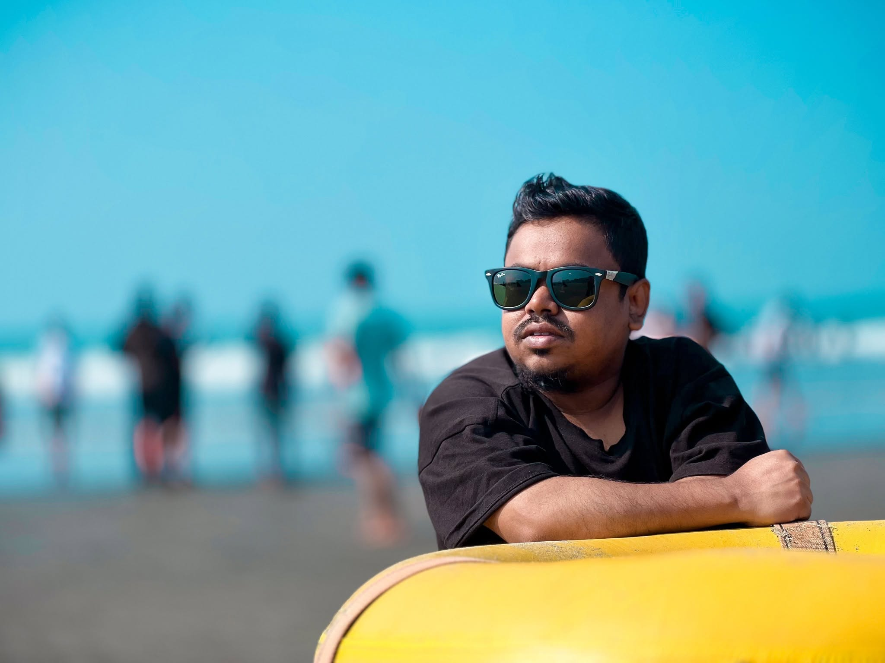

Graphic Design
- Professional Graphic Design
- Creative Concept Development
- Brand & Corporate Design
- Marketing & Promotional Materials
- Social Media Graphics
- Digital Advertising Creatives

HEAD OF GRAPHICS DESIGN
Monir Hossain Sujon is a highly experienced Graphic Designer and Creative Design Specialist with more than 10 years of professional experience in graphic design, visual communication, branding and digital creative production. With an academic background in Computer Science and Engineering (CSE), he combines technical knowledge with strong creative and visual design skills.
His professional background includes Golden Harvest and other reputed organizations. He has extensive experience creating original designs, redesigning existing visual concepts, developing design variations and transforming ideas or references into polished professional artwork.
Start a creative project ↗